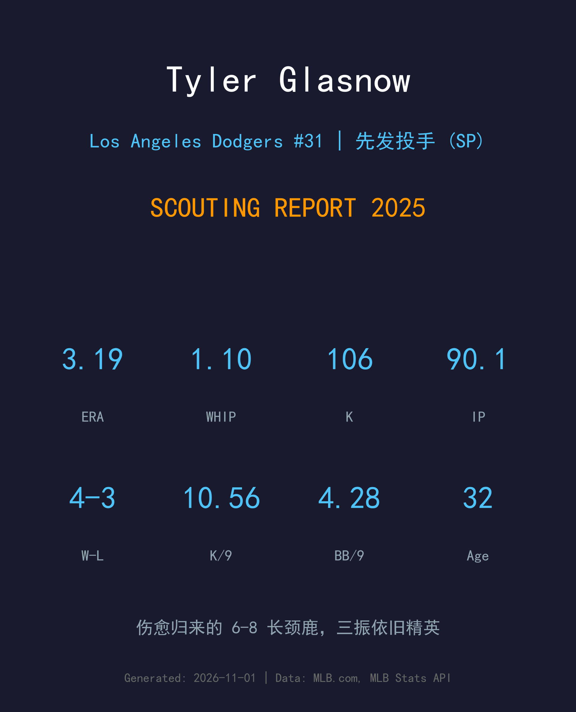
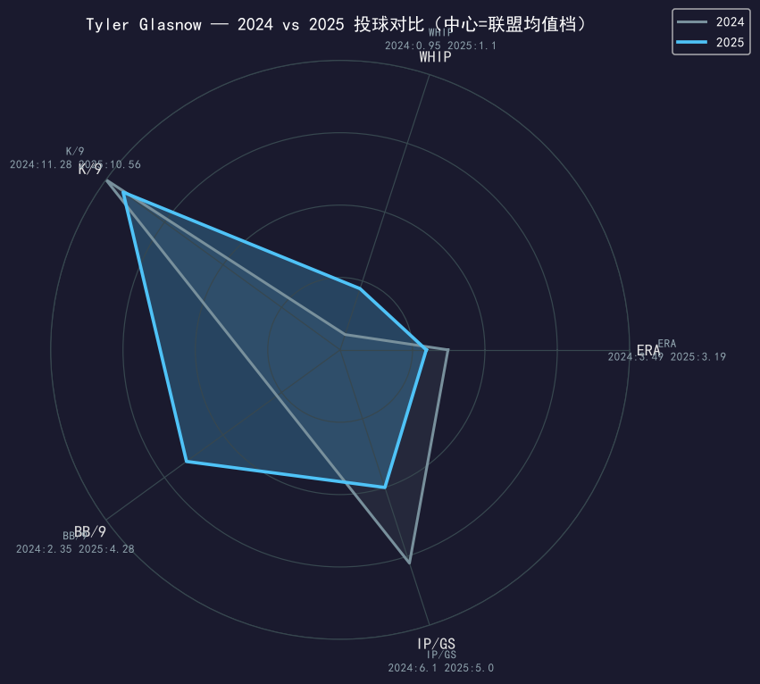
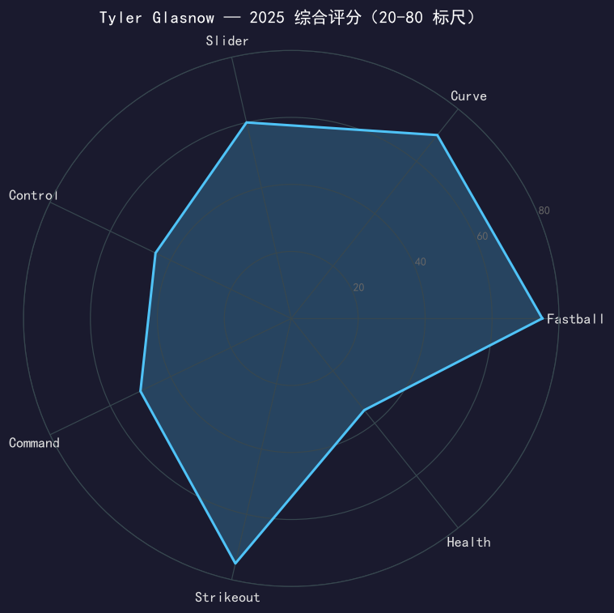

Los Angeles Dodgers #31 | 先发投手 | 右投左打 | 伤愈归来的 6-8 长颈鹿，三振依旧精英

Tyler Glasnow 是现役身材最吓人的先发投手之一：6 尺 8 寸的身高配上 95+ mph 的上旋速球与落差惊人的曲球，当健康时，他是联盟三振能力最强的轮值投手之一。生涯 1050 次三振、10.9 的生涯 K/9，数据背后是「可惜了」三个字——如果能完整投一个赛季，他会是什么样子？
2025 年他又没能给出完整答案：18 场先发、90.1 局、4 胜 3 负、3.19 自责分率、1.10 WHIP。数据无可挑剔——ERA 比 2024 年更低，每局三振 10.56 依旧 elite——但出赛数再度因伤缩水。6 月他因右肘不适进入伤病名单，虽然避免了韧带重建手术，但赛季第二次复发让教练组在九月直接关掉了他的先发轮值。
然后到了季后赛，道奇做出了一个大胆的决定：把他移进牛棚。结果是——12 场出赛、21.1 局、1.69 自责分率、25 次三振、1 次救援成功，成为冠军之路上最不可思议的隐藏武器。
2011 年选秀第二轮被海盗选中，2016 年 7 月完成大联盟首秀，6-8 的长颈鹿体型从第一天就成为话题。
在涉及 Chris Archer 的重磅交易中从光芒转投道奇（从海盗到光芒再到道奇的旅程），在道奇球探体系下逐步兑现天赋。
9 胜 6 负、3.49 自责分率、0.95 WHIP——他职业生涯投得最久也最稳的一个赛季，证明健康版 Glasnow 就是轮值前段。
季后赛 12 场出赛仅失 4 分自责分（1.69 ERA），25 次三振、1 次救援成功，以 multi-inning 后援身份捧起世界大赛冠军奖杯。

| 赛季 | G | GS | W-L | ERA | WHIP | IP | SO | BB | K/9 |
|---|---|---|---|---|---|---|---|---|---|
| 2024 | 22 | 22 | 9-6 | 3.49 | 0.95 | 134.0 | 168 | 35 | 11.28 |
| 2025 | 18 | 18 | 4-3 | 3.19 | 1.10 | 90.1 | 106 | 43 | 10.56 |
ERA 再降 0.30，但样本从 134 局缩水到 90.1 局——这就是 Glasnow 故事的永恒主题。值得注意的变化在 BB/9：2.35 飙到 4.28，肘部不适让他难以稳定重复出手动作，球数落后局明显增加。三振率小幅回落（11.28→10.56）仍居轮值第一，「 Stuff 」从未离开，离开的总是「 Innings 」。
2025 赛季真实配球数据（MLB Stats API pitchArsenal）：
6-8 身高带来的俯视出手角度让 95+ mph 的速球看起来更快，上旋效率顶级，是他抢好球数与两好球后追杀的基石。
招牌武器。落差与横向位移兼具，进垒点变化极大，打者哪怕读到出手也常常只能目送——他生涯三振率能站上 elite 的最大功臣。
89 mph 的滑球几乎是「速球变速」的概念，硬度极高，主要用来对付右打者、填补曲球与速球之间的速差空档。
2025 年新增的配球元素，95.7→96.0 的均速让他在速球系内部也能制造位移变化，对付左打者的内角武器。
Glasnow 的 2025 是「数据上更好、叙事上更焦虑」的一季。3.19 ERA 创道奇生涯新低，HR/9 1.00 保持在可控区间，56 支被安打分布在 90.1 局中（场均仅 5.6 支）显示打者很难摸到他。但 BB/9 从 2.35 涨到 4.28——不是配球选择变了，而是肘部隐患让手指对球的掌控力打折，坏球被迫变多。
教练组把他移进牛棚是一步妙棋：短局数掩盖了耐久问题，他的 Stuff 在 1-2 局的高强度释放下几乎无解。12 场出赛 25 次三振、被打击率仅 .197，1.69 的季后赛自责分率是他职业生涯最重要的 21.1 局。这也给未来提供了一个有趣的模板——如果健康始终无法支撑 180 局，「精英 multi-inning 武器」可能是延长生涯的最优解。
生涯 828 局、1050 次三振、10.9 K/9 的数据是赛扬级别的；但 33 岁的他从未单季突破 135 局。2025 年两次进入伤病名单、九月提前关机的现实提醒我们：他的每一季都是「能投多久」的赌局。好消息是季后赛证明了即使只有 80% 的他，依然是冠军拼图。

三振精英，健康是唯一变数
B+ 级 / 轮值前段（健康时）
道奇 2025 季后赛夺冠之路：外卡 2-0 红人 → NLDS 3-1 费城人 → NLCS 4-0 酿酒人 → 世界大赛 4-3 多伦多蓝鸟。
| G | GS | IP | ERA | WHIP | SO | BB | SV | HLD |
|---|---|---|---|---|---|---|---|---|
| 12 | 0 | 21.1 | 1.69 | 1.22 | 25 | 11 | 1 | 1 |
Tyler Glasnow 的 2026 年只有一个问题：先发还是牛棚？从季后赛的样本看，1-2 局的 Glasnow 是无解的；但如果肘部检查通过，道奇仍会想把他放回轮值——毕竟健康的他是联盟前十的先发。最可能的剧本是「轮值为主、季后赛随时转牛棚」的混合模式，这也可能是延长他生涯寿命的最优解。
理想剧本：健康投满 140+ 局，回到赛扬讨论圈
现实基准：100-120 局轮值 + 季后赛牛棚，保持 elite 三振率
转型选项：若耐久度持续不达标，专职 multi-inning 后援也能拿高薪
Tyler Glasnow 出生于加州纽霍尔，高中时期就是选秀圈瞩目的高个子右投。2011 年选秀第二轮被匹兹堡海盗选中，从此开始了他的「天赋兑现长跑」——这条路上有令人窒息的三振表演，也有反复的伤病挫折。
2018 年他被交易到坦帕湾光芒，在光芒投手培养体系下 K/9 一度飙到 13 以上，成为美联最令人胆寒的三振机器之一；此后在一笔涉及 Chris Archer 的大交易中来到洛杉矶道奇。在道奇，他第一次感受到了「完整赛季」的滋味——2024 年 134 局、168 次三振是他生涯最稳的一年。
6-8 的身高带来不可思议的出手点，也带来了比常人更复杂的投球力学——他的每一次伤病都会被归因于「身体太大、零件太多」。「Baby Giraffe」的绰号既是玩笑也是隐喻：优雅的巨人，总是走得太小心。2025 年的冠军戒指，是他 10 年坚持的最好补偿。